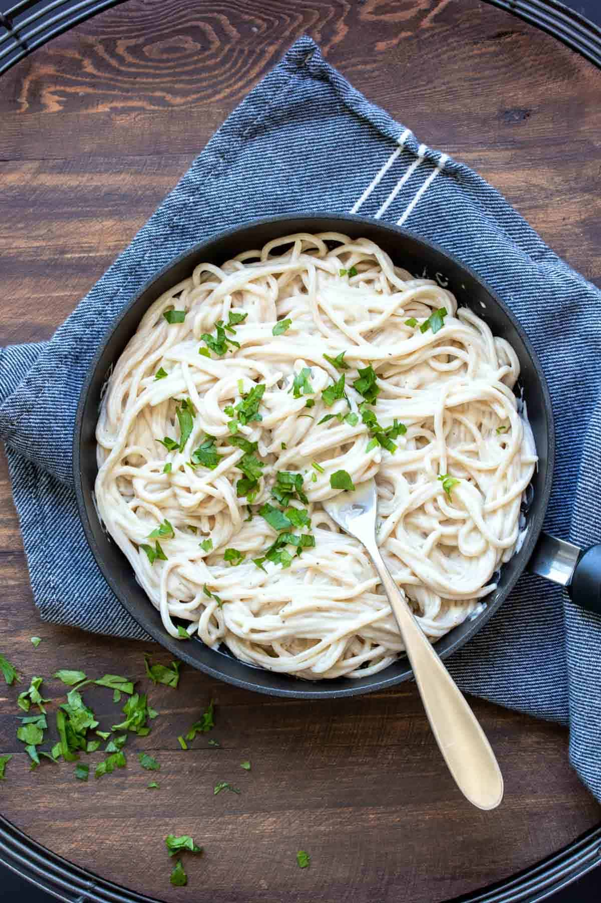

Vegan Alfredo

Description:
This vegan Alfredo sauce recipe is easy to make, filled with healthy ingredients and tastes incredible! It’s the perfect addition to dinner.
Ingredients:
- 1 ½ cups veggie broth , you can use water but it won’t be as flavorful
- 1 cup raw cashews
- ½ cup cooked potato
- ½ cup cooked white beans , rinsed and drained (I use great northern beans)
- 2 cloves garlic
- 1 teaspoon apple cider vinegar
- 1 teaspoon sea salt
- ¼ teaspoon ground black pepper